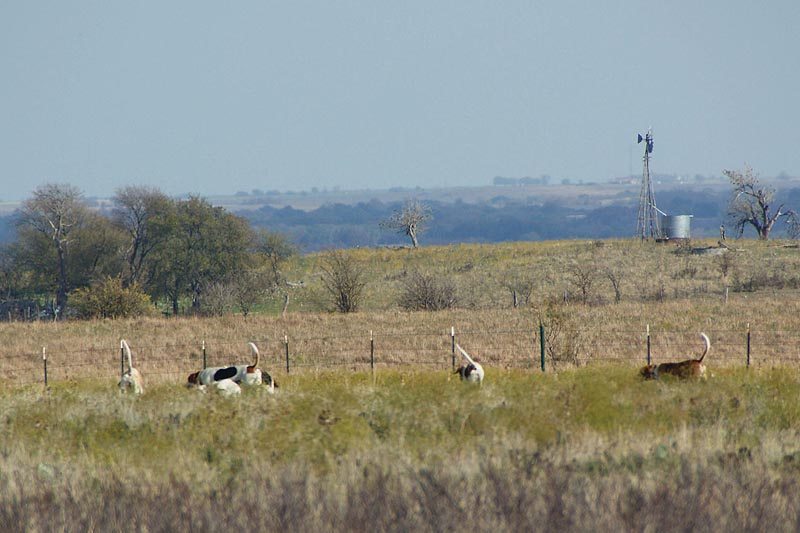
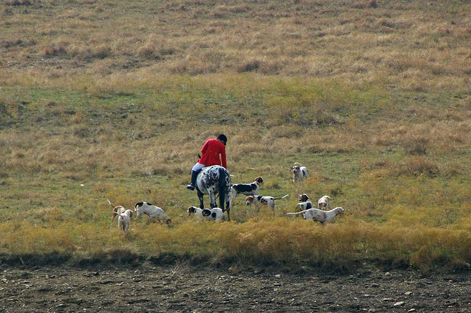

Opening Meet at Bedrock
Heading out with the hounds.
Laura and Judy following along.
Samantha's horse enjoyed the day out.
The hounds waiting to be sent on.
Janet following in the field.

All sterns in the air.
Katie and Bella near the windmill to the East.
The field following along.

At the edge of the nearly dry pond.
Katie and David keeping the hounds in sight.
Laura assisted Melanie with the hounds when needed.

Jennifer and Thistle watching the hounds from the East.
There was still some fall color this weekend.
Betsy and Mary Ann to the North.
Dropping into the broom weed.
Melanie and the hounds in the foreground and Thistle and Jennifer off in the background.
Laura coming back for a wayward hound.

Alert to any changes in the hounds.
Sending the hounds on to hunt.
Moving on to drop down into the next valley.
It was a dry and windy day, which made scenting almost impossible.
Laura and her horse covered some ground today.
The clouds were moving fast and casting shadows.
Chris and Susan worked together.
Bandit had a good day out.
Ketel starting to make his way back to the trailers.
Aver stayed to the far North most of the day.
Working their way through Fidler pasture.

Taking a break at the water.
Heading to the green gate.

Kind Thistle back at the trailers.
Betsy working her way back in.
Mary Ann heading to the hound trailer.
Some impressive visitors.